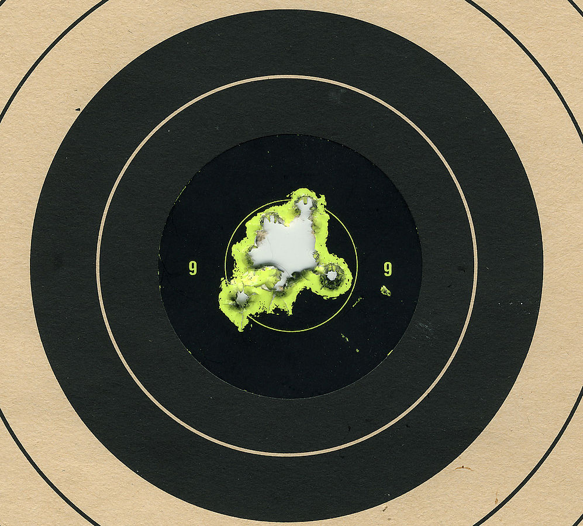
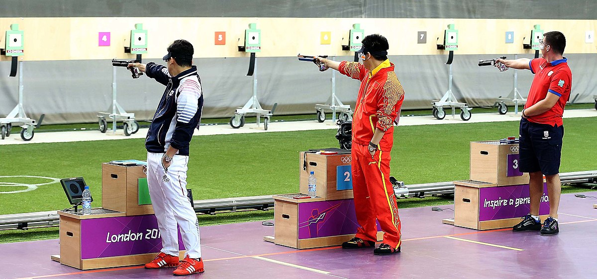
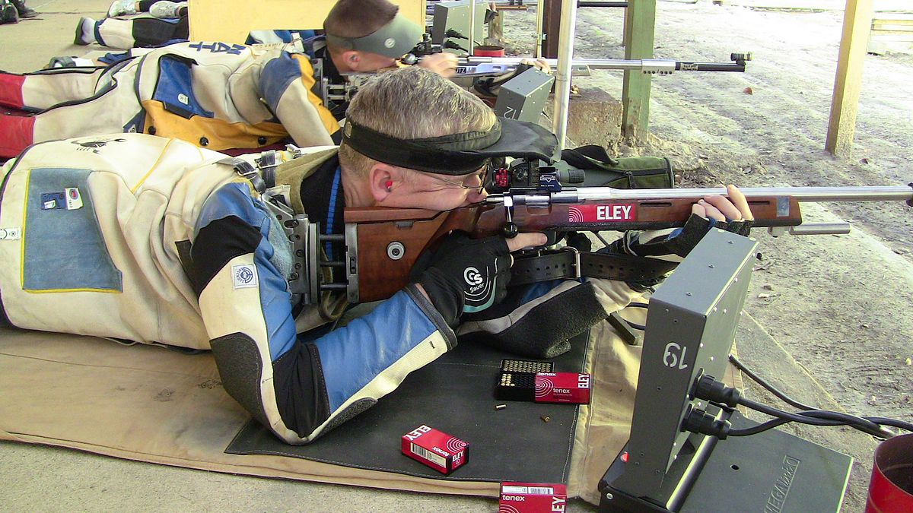
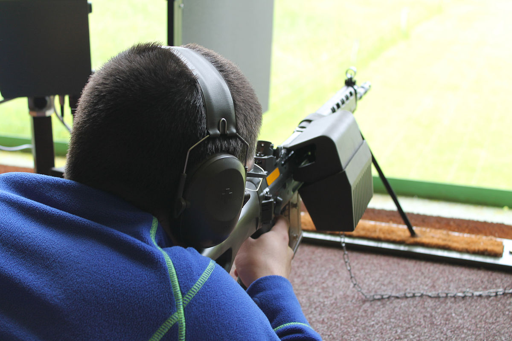

Hedefe Atış

Hedefe atış , amacın yuvarlak bir atış hedefini ortaya mümkün olduğunca yakın yavaş hassas ateşle vurarak mümkün olduğunca çok puan elde etmek olduğu bir tabanca ve tüfek atış disiplinleri kategorisidir.
Bu disiplinler, görüş resmi, nefes ve tetik kontrolü yoluyla kesinlik ve doğruluğa büyük önem verir. Sabit ve nispeten uzun zaman sınırları, yarışmacılara mükemmel bir atış için konsantre olmaları için zaman verir.
Hedefe odaklı atışa bir örnek ISSF'dir .tabanca ve tüfek disiplinleri olmakla birlikte, hedefe atış olarak sınıflandırılabilecek ulusal ve uluslararası birçok disiplin de vardır. Atış mesafeleri, ateşli silah tipine ve disiplinine bağlı olarak tipik olarak
10, 25, 50, 100, 200 veya 300 metre gibi yuvarlak rakamlarla verilir. Müsabakalar genellikle kalıcı atış poligonlarından ve aynı hedef düzenlemesi ve maçtan maça olan mesafeden yapılır. Genellikle yarışmacıların her birinin kendi atış hedefi vardır ve aynı
anda yan yana atış yaparlar. Nispeten basit maç formatı nedeniyle, yeni başlayanlara, nişancılığın temellerini öğrenmek için genellikle tam isabet atışları önerilir. Hedef tahtası atışları,Yaz Olimpiyat Oyunları ve yetkin olmak için önemli miktarda eğitim gereklidir.
Tabancalarla hedef tahtasına atış

- Tabancalarla altı ISSF atış etkinliği vardır. Bunlar, üç Olimpik etkinliğin yanı sıra Olimpiyat programına dahil olmayan ancak Dünya Şampiyonalarında yarışılan üç etkinliği içerir. Kökleri, 10, 25 ve 50 metre mesafelerden hem hassas yavaş atış hem de hızlı atış hedef
atışlarından oluşan 1896'daki ilk modern Olimpiyat Oyunlarına kadar uzanıyor. Tabancalar, normal silahlara kıyasla görünüşte benzersizdir ve her etkinliğin iş için özel olarak tasarlanmış kendi tabancaları vardır. Atıcılar, menzil altındaki küçük "tam hedef" hedefe ateş
etmek için yalnızca tek ellerini kullanmalıdır. Birleşik Krallık'ta (Kuzey İrlanda hariç), Dunblane Katliamı'ndan sonra getirilen 1997 tarihli Ateşli Silahlar (Değişiklik) (No. 2) Yasası uyarınca bazı Olimpiyat etkinlikleri için pratik yapmak artık mümkün değildir..
- CISM Rapid Fire maçı, ISSF 25m Rapid Fire Pistol etkinliğine benzer.
- Geleneksel tabanca atışı olarak da adlandırılan NRA Precision Pistol , farklı kalibrelerde 3 adede kadar tabancanın kullanıldığı bir hedef tahtası atışıdır. Tarihi neredeyse ISSF olayları kadar eskidir. Atıcılar, tabancayı sırasıyla 25 ve 50 yarda aşağı yerleştirilmiş 6- ve 8 inçlik hedefe tek elle ateşlemelidir.
- Hassas Tabanca Yarışması (PPC), aslen 1960 yılında Amerika Ulusal Tüfek Derneği tarafından başlatılan bir polis atış programıydı .
Tüfeklerle hedef tahtasına atış


- Altı tüfekle ISSF atış etkinliği (iki Olimpiyat etkinliği dahil: 10 metre havalı tüfek ve 50 metre üç pozisyonlu tüfek ), 10 veya 50 veya 300 metre (33 veya 164 veya 984 ft) mesafelerden uzun süreli hedef atışlarından oluşur.
- Fullbore hedef tüfeği , 300 yarda ila 1200 yarda mesafelerde tek atışlık tüfeklerle yüzüstü atış yapmayı içerir. Özellikle Britanya'da ve Milletler Topluluğu içinde (çoğunlukla Britanya İmparatorluğu'nun eski bileşenleri) popülerdir.
- Tabanca kalibrelerine yerleştirilmiş karabina tüfekler kullanılarak galeri tüfek atışları Birleşik Krallık'ta popülerdir. Galeri Tüfeği, 1997 tabanca yasağının ardından birçok tabanca atış disiplininin yerine geçti .
- Amerika Birleşik Devletleri'nde Yüksek Güçlü Tüfek ("Across the Course" veya "geleneksel" Yüksek güç olarak da bilinir), 200, 300 ve 600 yarda 3 pozisyonda (ayakta, diz çökmüş veya oturarak ve yüzüstü) atış yapan bir formattır. . Maç formatı, yarışmacıların atış rotasını tamamlamak için farklı mesafelerde atış yapmasını gerektirdiği için "Pistin Ötesinde" terimi kullanılmaktadır.
- Askerlik Tüfeği Atışı , hem geçmişte hem de günümüzde askeri güçler ve kolluk kuvvetleri tarafından kullanılan tüfeklerin kullanımını içeren bir atış disiplinidir. Eski askeri tüfekler, keskin nişancı tüfekleri (hem geçmiş hem de şimdiki) ve mevcut kullanım hizmet tüfeklerinin sivil versiyonları, Askeri Hizmet Tüfeği atış yarışmalarında yaygın olarak kullanılmaktadır.
Amerika Birleşik Devletleri'nde popülerdir ve her yıl Camp Perry'de düzenlenen Ulusal Maçlarla sona erer., Ohio. Bazı ülkeler sivillerin insan silueti hedeflerine ateş açmasını yasakladı; Siluet hedefler Ulusal Maç Atış Rotasında kullanılmaz. Bullseye hedefler kullanılır. High Power Rifle yarışması, her yıl Camp Perry'de düzenlenen ABD ulusal şampiyonaları gibi,
genellikle Service Rifle ile aynı etkinliklerde yapılır. High Power rakipleri genellikle kurallar dahilinde tercih ettikleri tüfekleri kullanan sivillerdir, oysa Service Rifle'a girenler mevcut veya önceki ABD silahlı kuvvetleri silahlarıyla sınırlıdır. NRA kurallarına göre yalnızca belirli maçlar optik manzaralara izin verse de, normalde 600 yardın üzerindeki mesafelerde yapılan maçlar.
- Project Appleseed , Devrimci Savaş Gazileri Derneği tarafından Amerikan Devrim Savaşı ile ilgili hem tüfek nişancılığı hem de sözlü tarih öğreten bir tüfek nişancılık programıdır. 100, 200, 300 ve 400 yarda atış simülasyonu yaparak, küçültülmüş ölçekli hedeflerde 25 metrede 3 pozisyonda (ayakta, oturarak ve yüzüstü) atış yapar. Öğretilen teknikler, Yüksek Güçlü Tüfeğe geçiş için kolaylıkla uygulanabilir.
- Birleşik Krallık'ta tam ve küçük çaplı tüfek atışları.
- Amerika Birleşik Devletleri'nde popüler olan üç pozisyonlu havalı tüfek yarışmaları .
- Dört pozisyonlu küçük delik ABD'de popüler bir spordur ve uluslararası alanda kullanılan Üç pozisyona Oturmayı da ekler.